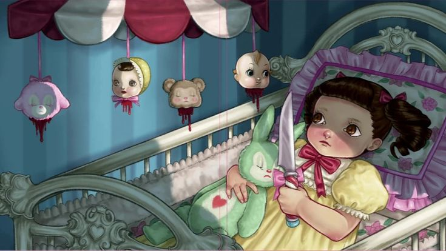

After School EP

Una etapa mas personal, corporal y emocional, fuera del cuento principal de Cry Baby.
1A?ade una imagen
Notebook
Pista 1
Audio pendiente
2A?ade una imagen
Test Me
Pista 2
Audio pendiente
3A?ade una imagen
Brain & Heart
Pista 3
Audio pendiente
4A?ade una imagen
Numbers
Pista 4
Audio pendiente
5A?ade una imagen
Glued
Pista 5
Audio pendiente
6A?ade una imagen
Field Trip
Pista 6
Audio pendiente
7A?ade una imagen
The Bakery
Pista 7
Audio pendiente
8A?ade una imagen
FIN
Fin del libro del EP.
9A?ade una imagen
1 / 9